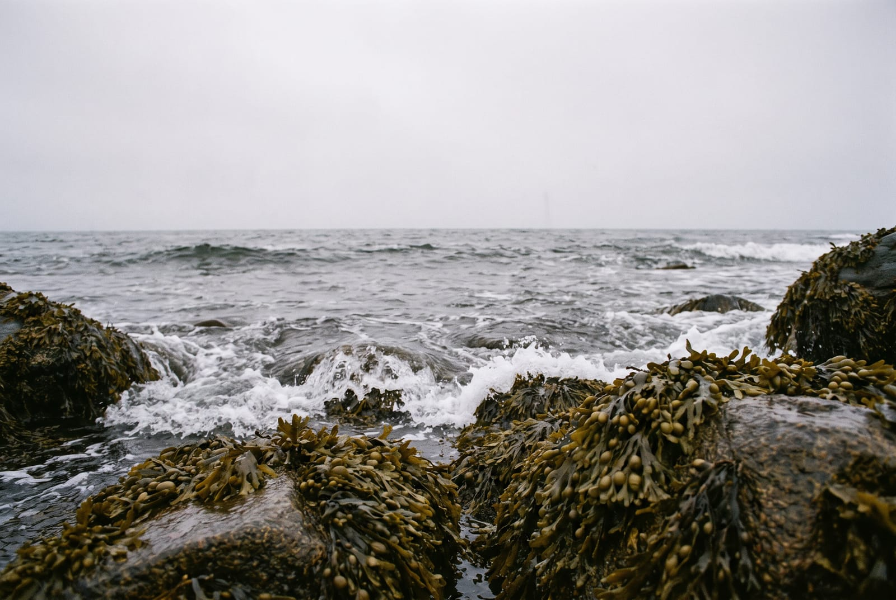
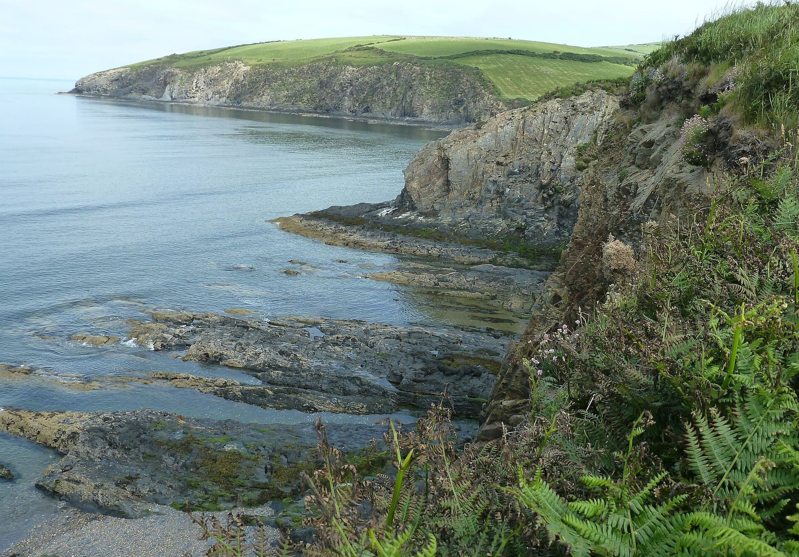
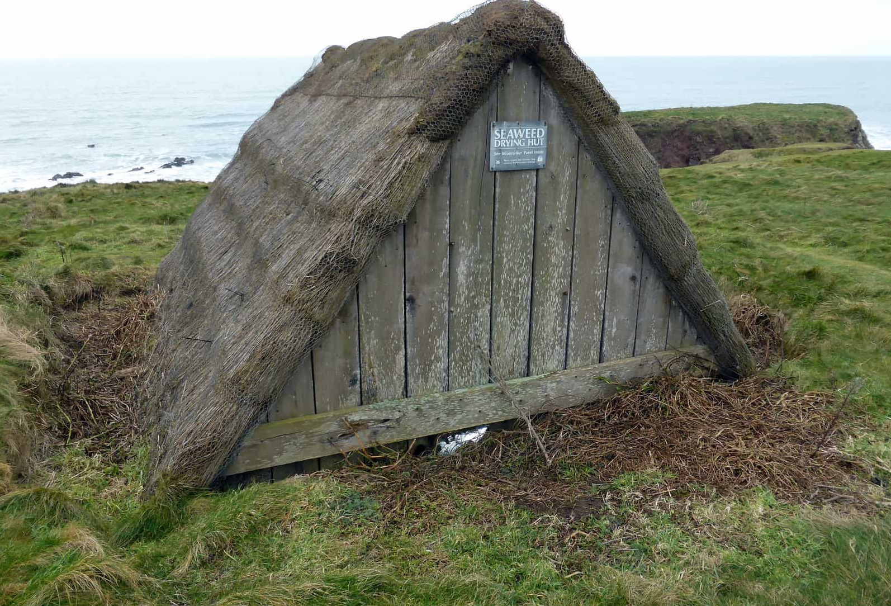

Sea moss · Ingredient notes
Bladderwrack, the brown one on both lists.
Four algae go into the Northern Soul formula and the same four go into Seaking. Three of them get asked about at the counter. This one, Fucus vesiculosus, almost never does. So here is the plant: the shape, the bladders, the stretch of shore it grows on, and the things about it that neither label prints.
By Reiss Davies Ausar9 September 20269 minute read

People ask me about the Chondrus, because that is the name on the front of the jar, and about the kelp, because everybody has seen kelp on a nature programme. Nobody has ever asked me about the bladderwrack. It is the second name on the Northern Soul list and the third on Seaking's, and in the time I have been behind the counter on Smithdown Road I do not think it has come up once.
Which is a shame, because it is the easiest of the four to go and look at. If you can get to a rocky beach on this coast at low tide, you will be standing on it. This is what I would tell you if you picked a handful up and brought it in.
01What the plant is
Fucus vesiculosus is a brown seaweed. The specification sheet groups the browns as Ochrophyta, and they are a separate branch of life from the red algae that sea moss belongs to. Not the same plant in a different colour. A different lineage that arrived at the same job.
The frond is flat and strap shaped, about two centimetres across, olive to dark brown, and it forks in two over and over as it grows, so a whole plant looks like a flattened, branching hand. A raised midrib runs the length of each strap. At the bottom is a small disc that glues the plant to the rock, called a holdfast. It is not a root. It takes nothing out of the stone, it only holds on.
On a sheltered shore a frond can reach the better part of a metre. On an exposed one it will be a fraction of that, and I will come back to why in section three.

02Where it grows, and where the Chondrus grows
A rocky shore sorts itself out by height. Every plant on a beach has a band it can hold, set by how long it can stand being out of the water and by how hard the sea hits it, and once you know the order you can read a beach from the car park.
From the top of the shore downwards, on an Atlantic or North Sea coast, the usual order runs like this.
- Channelled wrack. Highest, up in the splash, dry and crisp for most of the tide.
- Spiral wrack. Just below it. Twisted fronds, no bladders.
- Bladderwrack. The middle of the shore. This is the one on our two lists.
- Serrated wrack. Lower again, with a saw-toothed edge, and no bladders either.
- Kelp. At the low water mark and below it, uncovered only on a big spring tide. Laminariales, another name on our lists.
Chondrus crispus, the sea moss itself, sits down at the bottom with the kelp and just under it. So the ingredient card on Seaking is exact when it says the bladderwrack grows on the same shores, a little higher up the beach. Picking Chondrus means waiting for the tide to drop off it. You can pick bladderwrack for most of the day.

Out of the water the two plants look nothing like each other, which is the other reason it is worth knowing which is which.


03The bladders, and what they are for
The name is the whole description. Vesiculosus means covered in small bladders, and that is what they are: pairs of gas-filled swellings set either side of the midrib, usually two together, sometimes in a row down the frond. Press one and it gives, then pops.
They are floats. When the tide is in and the frond is under water, the bladders lift it off the rock and hold it up towards the light, which is where a plant living on photosynthesis wants to be. When the tide goes out the whole thing lies down flat on the stone in a heap and waits.
On a shore that takes a beating the plant grows fewer bladders, or none at all. The reason is mechanical rather than mysterious. A float on a strap in heavy surf is a handle for the sea to pull on, and the plants that keep their bladders on a wave-hammered headland are the plants that get torn off it. Botanists have given that bladderless form its own name.
A wrack with no bladders is still a wrack. It is one that grew where the sea hits harder.
If you want to watch them work, drop a frond into a bucket of seawater. It stands up.
04Why it is on both of our lists
The Northern Soul formula is four algae from three families, grouped by pigment: red, brown and green. Bladderwrack is one of the two browns. The gel is those four prepared with water and nothing else, no preservative, no thickener, no sweetener. Seaking is the same four, dried and milled into 50 vegan capsules at 800 mg, with one addition.
| Name on the list | Group | What it is |
|---|---|---|
| Chondrus crispus | Red · Rhodophyta | Irish sea moss, the base of both products. Wildcrafted off cold Atlantic rocks, not pool grown. |
| Fucus vesiculosus | Brown · Ochrophyta | Bladderwrack. Mid-shore, above the Chondrus, with the air bladders. |
| Laminariales | Brown · Ochrophyta | Kelp. An order rather than a species, so the name covers several plants and not one. |
| Chlorella | Green · Chlorophyta | A single-celled green alga. Cultivated rather than wild, and the only one of the four from fresh water. |
| Syzygium aromaticum | Spice · Myrtaceae | Clove. On the Seaking list and not on the gel's, which is the whole difference between the two. |
The grouping by colour is not decoration. Red, brown and green is how the algae are classified, and the sheet uses those words because they are the plainest way of saying that these are four different plants and not four names for one.
What I am not going to write is the sentence explaining why a brown one sits in there next to a red one. The listing this site replaced carried several of those. A formulator's reason turns into a claim somewhere between the bench and the web page, so the sheet prints the list and the grouping and then stops.

05Iodine, and the figure the jar does not carry
Seaweed takes iodine out of the water it grows in and holds on to it. The brown algae are the group best known for doing that, and the kelps most of all. Bladderwrack is a brown alga, and it is one of the reasons the gel prints no per-spoon iodine figure.
The specification sheet puts it in one row: sea moss and kelp both contain iodine, the amount in a spoonful varies from harvest to harvest, so no figure is printed. That is not modesty. A number on a label has to be true of the jar in your hand, and the only way to make it true is to test batches. A gel made in small runs above a shop does not carry that cost at £34.99 for 300 ml.
Seaking does carry a figure, because dried and milled material sits still enough to measure. 75 µg of iodine in a capsule, 150 µg in the two you take. The reference intake for an adult is 150 µg a day. The listing also gives 220 µg and 290 µg for pregnancy and for breastfeeding. Those are intakes rather than instructions, and the people to talk to about them are a GP or a midwife.
One more thing while we are on it. I have no figure for how much of the iodine in either product came out of the bladderwrack rather than out of the kelp or the Chondrus. Nobody has asked me to split it that way, and I could not do it if they did.

06What is not printed about it
This is the part I would rather you read than the botany. Here is what the two labels do not say about the bladderwrack in them.
- Where it was picked. The sheet says the Chondrus base is wildcrafted off cold Atlantic rocks and not pool grown. It says nothing about the shore the wrack came from. No country, no coast, no supplier.
- Wild or cultivated. Wildcrafted is printed for the base. It is not printed for this one, so do not read it across.
- How much. No percentage and no milligram figure per alga on either product. Four names on the gel, five on the tub, and no split between them.
- Which part. Whole frond, blade only, with or without the bladders and the holdfast. Not printed.
- When. Season and harvest date are not on either label, and wrack picked in March is not the same material as wrack picked in September.
- Any laboratory number. No iodine figure for the gel, and no published certificate of analysis, for heavy metals or for anything else, on either product.
I am not going to dress that list up. Some of it I could close with paperwork from a supplier. Some of it would take batch testing I do not pay for today. Until one or the other happens, a list of what is missing is more honest than a paragraph written so that nothing looks missing.
07Who should leave both of them alone
Both products carry iodine, from this alga and from the other two seaweeds beside it. What follows is what is printed on the pack and what I ask people at the counter. It is standard public guidance rather than anything I have worked out about you.
- Overactive thyroid. The jar and the tub both say it. Not for anyone with hyperthyroidism, because of the iodine.
- Thyroid medication of any kind. Ask your GP or pharmacist first. If they are content for you to take something, take the counted one, because 150 µg in a serving is a number they can work with.
- Pregnant or breastfeeding. Ask your midwife or GP. The reference intakes are different, 220 µg and 290 µg, and that is a conversation for a clinic and not a counter.
- Anything else you take with iodine in it. Kelp tablets, some multivitamins, seaweed snacks. The figures add together whether or not you meant them to.
- Children. Not for them. Keep both out of reach.
Do not exceed the stated dose. One tablespoon of the gel in the morning, or two capsules, and a missed day stays missed rather than getting doubled up tomorrow.

The two it is in, and the two it is not
Bladderwrack is on the Northern Soul list and on Seaking's. It is in neither of the single-species gels, which is worth knowing if iodine is the reason you are reading this.

Northern Soul
from £34.99The gel with the formula in it. Four algae from three families, bladderwrack among them, prepared with water. 300 ml or 500 ml, in the fridge, 28 days once opened.
Choose a size
Seaking
£39.99The same four, dried and counted. 50 vegan capsules at 800 mg, 75 µg of iodine in each and 150 µg in a serving. Clove is on this list and not the gel's.
See the specification
Chondrus Crispus
£34.99No wrack in it. One alga, water and a drop of Omega DHA oil. The single-species gel, and the one people use on skin and hair.
Add to bag
Purple Mwani
£24.99The warm-water species, on its own. Eucheuma cottonii from Tanzania, named as itself. No wrack, no kelp, no formula around it.
Add to bagIf you would rather see the plant than read about it, pick a low tide and a rocky beach. Everything in section two is on it, in that order, and it costs nothing.
If you are buying a jar somewhere other than here, I have written down what to check on any label, ours included.

Reiss Davies Ausar
Founder and formulator at Herbase. Trading online since 2019 and behind the counter at 599 Smithdown Road, Liverpool, since August 2024. Author of three books on herbal practice. Book an hour with him if you want to go into more detail.